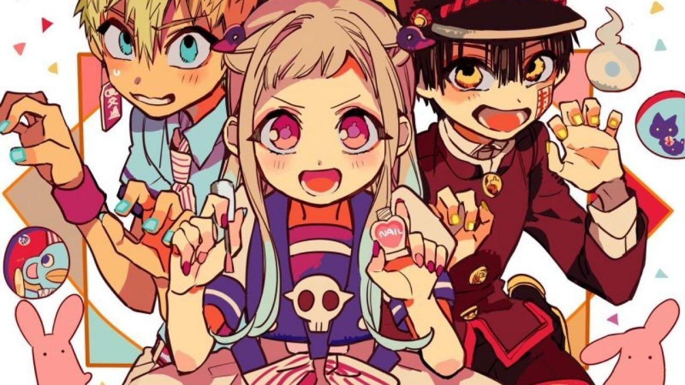

Clique para saber mais
O anime de Toilet-bound Hanako-kun foi um anime que eu descobri assistindo vídeos e logo se tornou um dos meus animes favoritos.
Ele fala sobre uma escola onde existem muitos seres sobrenaturais e fantasmas.
O anime de Toilet-bound Hanako-kun foi um anime que eu descobri assistindo vídeos e logo se tornou um dos meus animes favoritos.
Ele fala sobre uma escola onde existem muitos seres sobrenaturais e fantasmas.